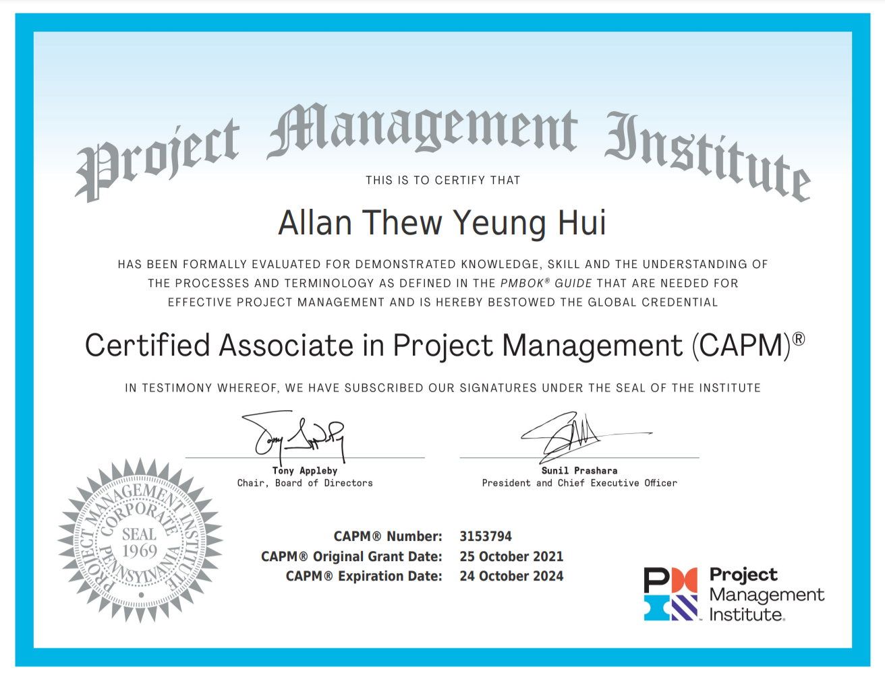
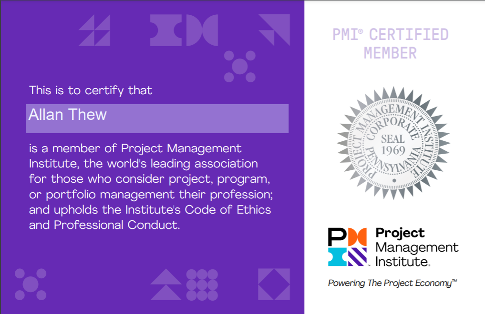
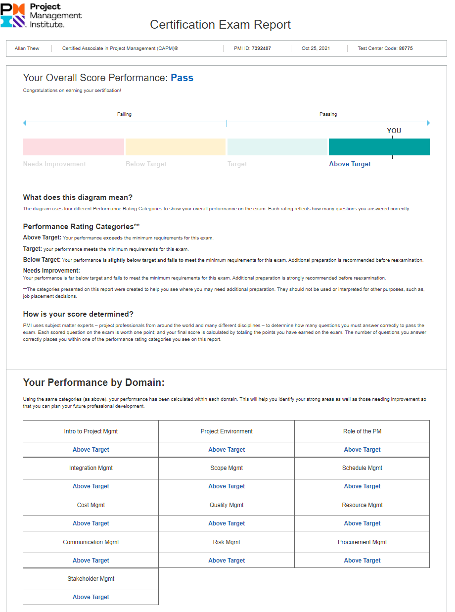
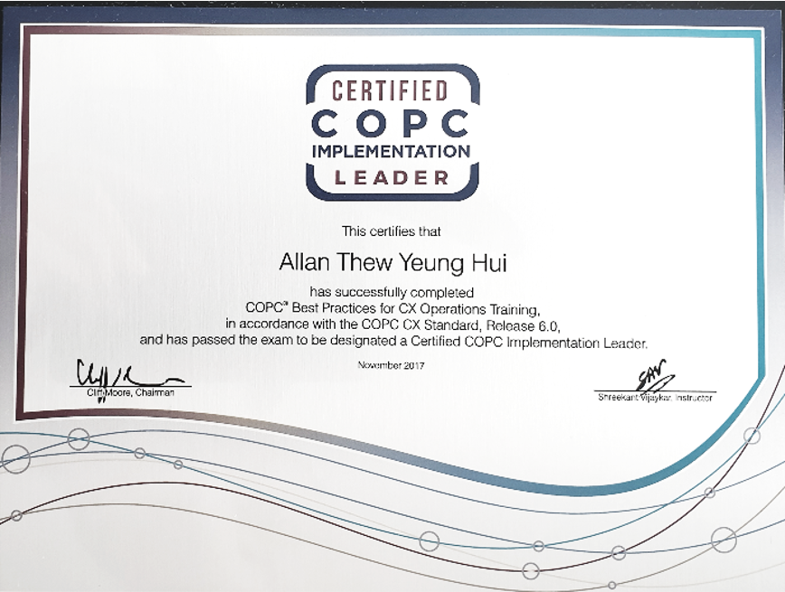

Certification & Education

Below are descriptions of my professional certifications and academic background. My recent certification efforts aim to update and align real-life experiences, skills, and knowledge with theories and the latest best practices. I have continuously developed and utilized skills in customer experience, strategic leadership and management, data analytics, and project management due to their proven practical effectiveness in a manager's skill set. These certifications also facilitate communication among professionals in the field.
Click on the headers for more info.
-
Nottingham University Business School (NUBS) is one of an elite group of business schools with triple crown accreditation. It is accredited by the European Quality Improvement System (EQUIS), the association of Advance Collegiate Schools of Business in the United States (AACSB) and the association of MBAs (AMBA) in the UK. The University of Nottingham is ranked amongst the top 1% of universities internationally. The Nottingham MBA is ranked 55th globally, and 3rd in the UK's, in The Economist 2021 Full-Time MBA Ranking.
-

Murdoch University has ranked among Australia’s top universities in the 2021 edition of the Good Universities Guide, with five-star rankings in several categories across undergraduate and postgraduate educational experience.
GOOGLE DATA ANALYTICS CERTIFICATE (2021)
The Google Data Analytics Professional Certificate Program includes over 180 hours of instruction and hundreds of practice-based assessments developed by Google employees with decades of experience in data analytics. Google has announced that in it's own hiring practices, it will consider the Data Analytics Professional Certificate as equivalent to a four-year degree for related roles.

PMI CERTIFIED ASSOCIATE IN PROJECT MANAGEMENT (2021)
The Certified Associate in Project Management (CAPM)® is a specialized credential with stringent exam requirements that consistently ranks as the global top 10 project management certification offered through the highly acclaimed Project Management Institute (PMI). It demonstrates knowledge of PMI’s project management framework and project management processes.
COPC IMPLEMENTATION LEADER (2017)
COPC certification is the most prestigious recognition in the industry for any customer experience operation. The certification process is an independent and objective assessment of your operation’s current performance compared to the requirements found in the COPC Customer Experience (CX) Standard.
